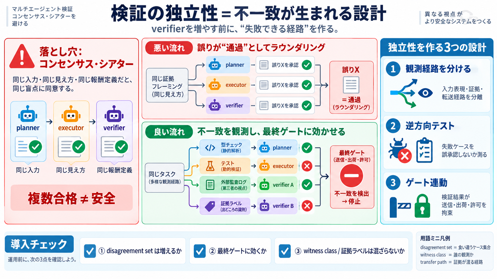

To Not vs Not To: Which Is Correct?
Even though to not and not to are both grammatically correct, there are many writers who argue you should only use not t…

Even though to not and not to are both grammatically correct, there are many writers who argue you should only use not t…
Above all it's a question of meaning. “it's not” separates the negative and emphasises it, making it stronger. However, …
What is the difference between “it’s not” and “it isn’t”?
Some people use ""lol"" on the internet what does it mean? · Please tell us about difference between ""to not"" and ""no…
can I borrow your book? That's kinda the same thing as I like rib-eye steak because of its flavor. - [Voiceover] Right, …